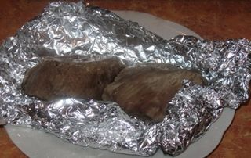
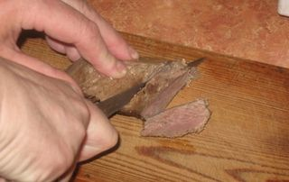
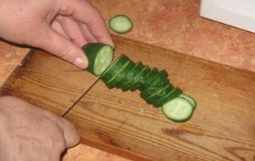
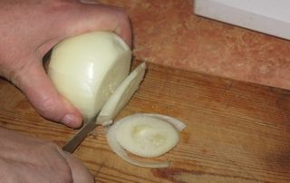
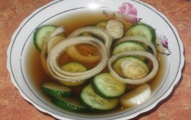
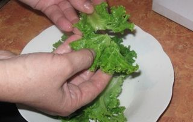
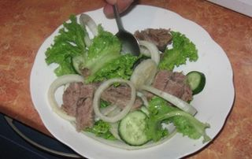

Шаг 1: подготавливаем говядину.

Хорошо промываем мясо под проточной водой и перекладываем на разделочную доску. С помощью кухонного ножа удаляем с говядины сухожилия и хрящи. Желательно, чтобы мясо имело прямоугольную форму, так его будет легче запекать. Затем говядину перекладываем на середину фольги для выпечки. Размер фольги должен быть гораздо больше куска говядины, ведь нам нужно очень плотно и герметично укутать мясо, чтобы во время его запекания сок не вытекал наружу из упаковки на противень. Для этого приподнимаем две противоположные стороны фольги, соединяем их между собой и затем плотно скручиваем. Далее – защипываем боковые швы с каждой стороны и проверяем герметичность упаковки.
Выкладываем упаковку с мясом на противень и ставим в предварительно разогретую до температуры 220°С духовку. Запекаем говядину в течение 2 часов. Затем слегка разворачиваем фольгу и продолжаем выпекать мясо ещё 10-15 минут до появления аппетитной румяной корочки. Чтобы проверить готовность мяса, достаточно его проткнуть ножом. Если он входит легко, а из надреза вытекает прозрачный сок, значит мясо готово. Противень, с помощью кухонных прихваток достаем из духового шкафа и аккуратно разворачиваем фольгу.

Когда мясо остынет, перекладываем его на разделочную доску и с помощью кухонного ножа нарезаем ломтиками, толщиной не более 5 миллиметров. Ломтики говядины перекладываем в свободную миску.
Шаг 2: подготавливаем огурцы.

Огурцы промываем под проточной водой и перекладываем на разделочную доску. Воспользовавшись кухонным ножом, нарезаем овощ на кружочки. Толщина колец должна быть примерно 4-5 миллиметров. Затем перекладываем их в свободную миску.
Шаг 3: подготавливаем лук.

Ножом очищаем лук от шелухи и хорошо промываем под проточной водой. На разделочной доске нарезаем его поперек на колечки, толщиной не более 4-5 миллиметров и перекладываем их в миску к огурцам.
Шаг 4: подготавливаем маринад.

В отдельную миску наливаем соевый соус, рисовый уксус и добавляем сахар. С помощью столовой ложки хорошо перемешиваем все до полного растворения сахара в жидкости. Затем в эту же емкость перекладываем измельченные лук и свежие огурцы. Миску накрываем крышкой и ставим в холодильник на 15-20 минут.
Шаг 5: подготавливаем салатный лист.

Салатный лист перебираем и удаляем привядшие или порченые листочки. Затем хорошо промываем их под проточной водой и укладываем на бумажное полотенце. После перекладываем салатные листья в свободную тарелку и вручную рвем их на большие кусочки.
Шаг 6: готовим салат из говядины с огурцами.

В большое блюдо перекладываем кусочки салатных листьев, добавляем измельченные огурцы и лук, а затем нарезанную тонкими ломтиками говядину. Солим и перчим по вкусу, и заправляем кунжутным маслом. С помощью столовой ложки аккуратно перемешиваем между собой все ингредиенты. Даем салату из говядины с огурцами настояться в течение 10-15 минут. По вашему желанию сверху наше блюдо можно украсить измельченной зеленью укропа.